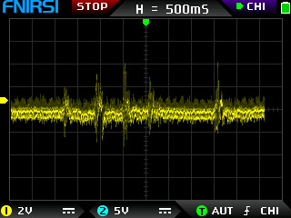
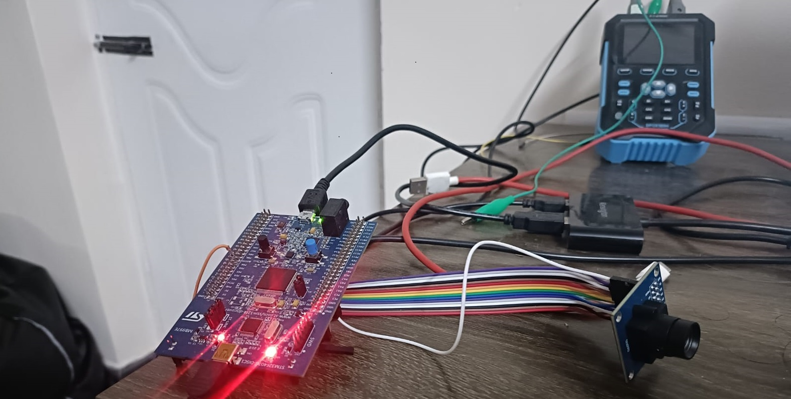

Projects Showcase
EMG Signal Acquisition and Enhancement Using Dual ADCs
Technologies: Analog Front End | MSP430 | NAU7802 | Simulink | Embedded C
- Used MSP 430 UART driver at 921600 btps using interrupt-based programming.
- Designed the I2C Interface between MSP430 and NAU7802 and debugged the protocol using an oscilloscope.
- Built an analog differential amplifier on a breadboard for collecting raw EMG data.
- Processed and visualized signals using MATLAB and SIMULINK.
DCMI Camera System using STM32

Captured Image of Setup

The Actual Setup
Technologies: FreeRTOS | ARM | STM32 | FATFS | USB | DCMI
- !A work in progress!
- Used an STM32F407 controller with its DCMI Interface for camera data capture.
- Handled SDIO, USB FS, and DMA for high-throughput frame storage and transfer.
- Achieved real-time data acquisition through DMA and a parallel storage task.
WS2812-Based Smart LED System

Technologies: FPGA (Cyclone II) | Verilog | Python | NodeMCU | Quartus II
- Developed a music-responsive LED system, initially on a NodeMCU and later ported to an FPGA.
- Designed modular state machines on the FPGA to handle UART communication, memory access, and LED control.
- Utilized Quartus II for HDL design and Python to stream audio data via a COM port.